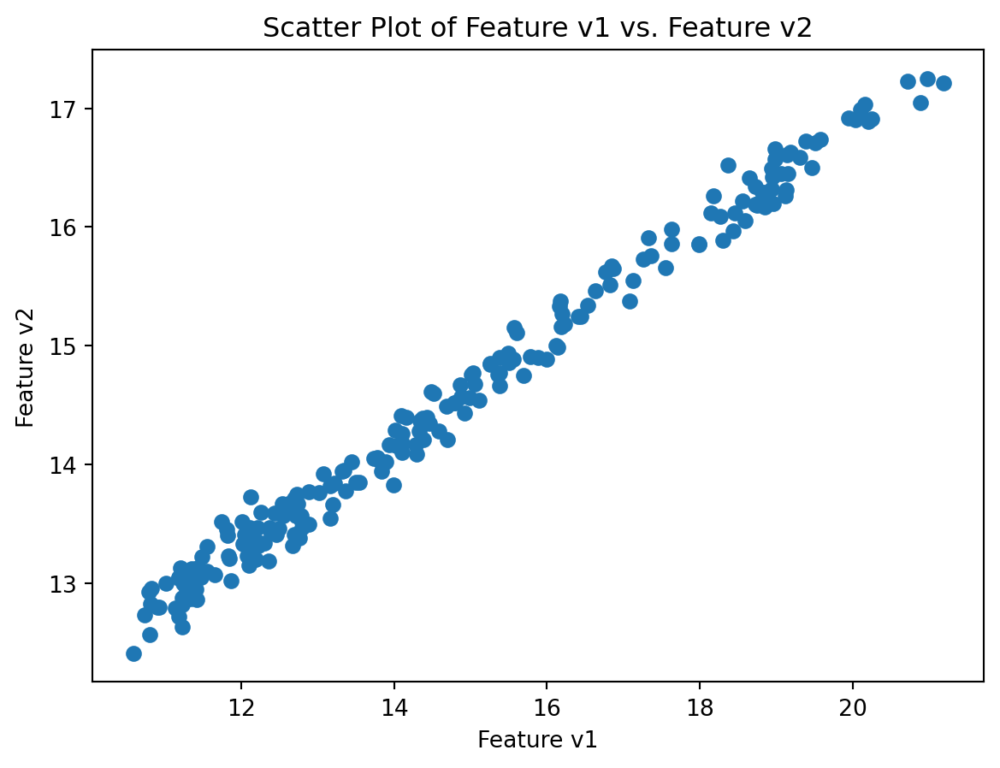
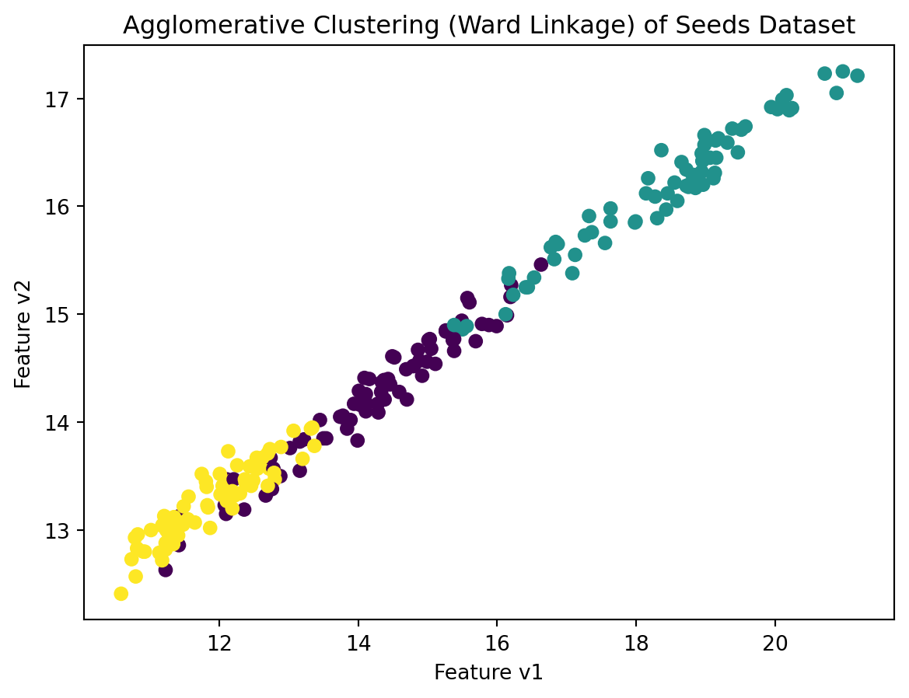
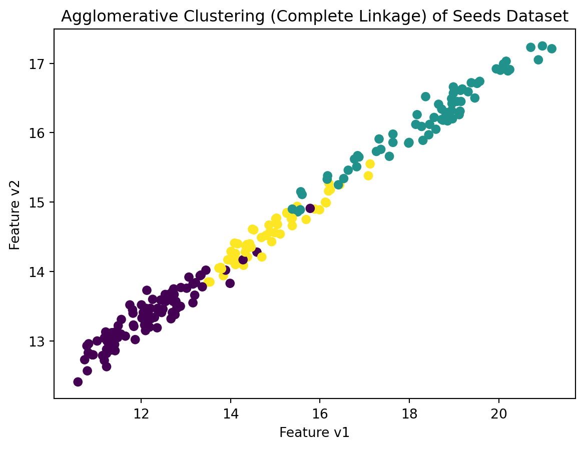

Agglomerative Clustering Demonstrated Using Seeds Dataset
Introduction:
In the realm of unsupervised machine learning, agglomerative clustering stands out as a powerful tool for unraveling hidden structures within datasets. In this blog post, we will see how agglomerative clustering works while exploring its application on the Seeds dataset. The Seeds dataset which is a collection of measurements related to various seed properties, is a very simple data set to understand this clustering technique.
Seeds Dataset:
The Seeds dataset, sourced from the UCI Machine Learning Repository, encapsulates the characteristics of three different varieties of wheat seeds: Kama, Rosa, and Canadian. The dataset comprises of seven distinct features (‘V1’ to ‘V7’),which are based on seed atrributes like area, perimeter, compactness, etc. measured for each seed.
Exploration and Preprocessing:
Before delving into clustering, it’s crucial to acquaint ourselves with the features at hand. Visualization aids in this process, and histograms or scatter plots can reveal the distribution and relationships within the dataset. Moreover, standardizing or scaling features may be necessary to ensure each contributes equally to the clustering process.
import pandas as pdimport matplotlib.pyplot as pltfrom sklearn.preprocessing import StandardScalerfrom sklearn import datasets# Load the Seeds datasetseeds = datasets.fetch_openml(name='seeds', version=1)X = pd.DataFrame(data=seeds.data, columns=seeds.feature_names)# Visualize features (example: scatter plot of v1 and v2)plt.scatter(X['V1'], X['V2'])plt.title('Scatter Plot of Feature v1 vs. Feature v2')plt.xlabel('Feature v1')plt.ylabel('Feature v2')plt.show()# Standardize featuresscaler = StandardScaler()X_scaled = scaler.fit_transform(X)
C:\Users\USER\AppData\Roaming\Python\Python38\site-packages\sklearn\datasets\_openml.py:1022: FutureWarning: The default value of `parser` will change from `'liac-arff'` to `'auto'` in 1.4. You can set `parser='auto'` to silence this warning. Therefore, an `ImportError` will be raised from 1.4 if the dataset is dense and pandas is not installed. Note that the pandas parser may return different data types. See the Notes Section in fetch_openml's API doc for details.
warn(

Understanding Agglomerative Clustering:
Agglomerative clustering builds clusters hierarchically by successively merging or agglomerating individual data points or clusters. The process continues until all data points belong to a single cluster or a specified number of clusters is reached. The choice of linkage method, such as ‘ward,’ ‘complete,’ or ‘average,’ influences how the distance between clusters is calculated during the agglomeration process.
Clustering Seeds with Ward Linkage:
The Ward linkage minimizes the variance within clusters, aiming to create compact and spherical clusters. This method is sensitive to the distribution of data points and often results in well-defined clusters.
In contrast, the Complete linkage measures the maximum distance between clusters. It tends to form clusters with similar shapes and sizes, making it less sensitive to outliers compared to Ward linkage.
Let’s visualize the clusters formed by both Ward and Complete linkage methods to observe the distinctions. The scatter plots showcase how each method influences the grouping of seeds based on their features.
# Visualize clusters for Ward Linkageplt.scatter(X['V1'], X['V2'], c=labels_ward, cmap='viridis')plt.title('Agglomerative Clustering (Ward Linkage) of Seeds Dataset')plt.xlabel('Feature v1')plt.ylabel('Feature v2')plt.show()# Visualize clusters for Complete Linkageplt.scatter(X['V1'], X['V2'], c=labels_complete, cmap='viridis')plt.title('Agglomerative Clustering (Complete Linkage) of Seeds Dataset')plt.xlabel('Feature v1')plt.ylabel('Feature v2')plt.show()


Cluster Profiles
As clusters materialize, it’s time to interpret their meaning. Examining the average values of each feature within a cluster unveils distinct profiles. Are certain clusters dominated by larger seeds, or do others exhibit unique combinations of area and compactness?
Validation and Interpretation Using Silhouette Score:
The silhouette score is a metric used to calculate the goodness of a clustering technique. It measures how similar an object is to its own cluster (cohesion) compared to other clusters (separation). The silhouette score ranges from -1 to 1, where a higher score indicates better-defined clusters. A score around 0 indicates overlapping clusters. Validation metrics, such as silhouette scores, offer quantitative measures of clustering quality. Moreover, comparing clustering results across different linkage methods can shed light on the sensitivity of the algorithm to choices made during clustering.
Conclusion
In conclusion, agglomerative clustering’s hierarchical nature provides a nuanced understanding of seed properties, enabling us to discern patterns that might otherwise remain concealed. This blog tried to illustrate the basic usage of agglomerative clustering to understand how unsupervised machine learning algorithms can be used.